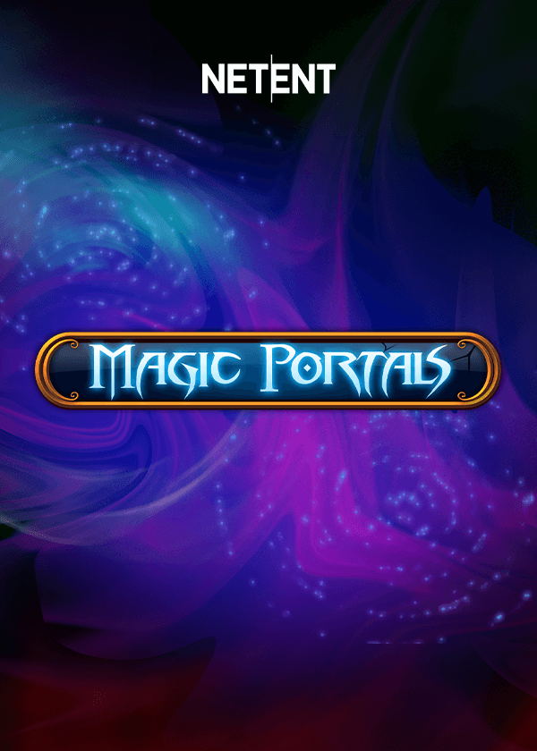

Magic Portals - RTP, análise e onde jogar

| Provedor | NetEnt |
|---|---|
| Tipo de jogo | Caça-níquel de vídeo |
| Tema | magia e magos |
| RTP | Varia conforme o cassino (ver perguntas frequentes) |
| Celular | Sim |
Visão geral
Magic Portals agita a varinha sobre um mundo de feitiços e poções.
Livros de feitiços e bolas de cristal brilham com luz arcana a cada giro.
Místico, cintilante e cheio de encanto.
Onde jogar Magic Portals
Magic Portals está disponível em cassinos online que oferecem jogos da NetEnt. Comece pelas nossas listas verificadas:
Nigéria | Brasil | México | Quênia | África do Sul | Colômbia | Índia
Perguntas frequentes sobre Magic Portals
Qual é o RTP de Magic Portals?
A NetEnt lança Magic Portals com várias configurações de RTP, e cada cassino escolhe uma delas. O valor exato pode variar entre cassinos. Para conferir, abra as informações do jogo ou a tabela de pagamentos dentro do jogo no cassino onde você joga.
Posso jogar Magic Portals de graça?
Muitos cassinos online permitem testar Magic Portals no modo demo sem depositar. Escolha um cassino das nossas listas e procure a opção demo ou de jogo grátis se quiser testá-lo primeiro.
Onde posso jogar Magic Portals com dinheiro real?
Magic Portals está disponível em cassinos que oferecem jogos da NetEnt. Nossas listas cobrem Nigéria, Brasil, México, Quênia, África do Sul, Colômbia e Índia, e incluem apenas operadores que analisamos.
Magic Portals funciona no celular?
Sim. Como todos os lançamentos da NetEnt, Magic Portals roda no navegador de celulares e tablets, sem precisar baixar nada.